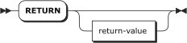

RETURN Statement
Ends script execution immediately. If an expression is provided, then that value
is returned to the caller. If no expression is provided, then NULL is returned.
Syntax

Arguments
- expression (any expression, optional)
The value to be returned to the
calling script, if any.
Examples
RETURN;
Ends the script and returns NULL.RETURN 1 + 2;
Returns 3.